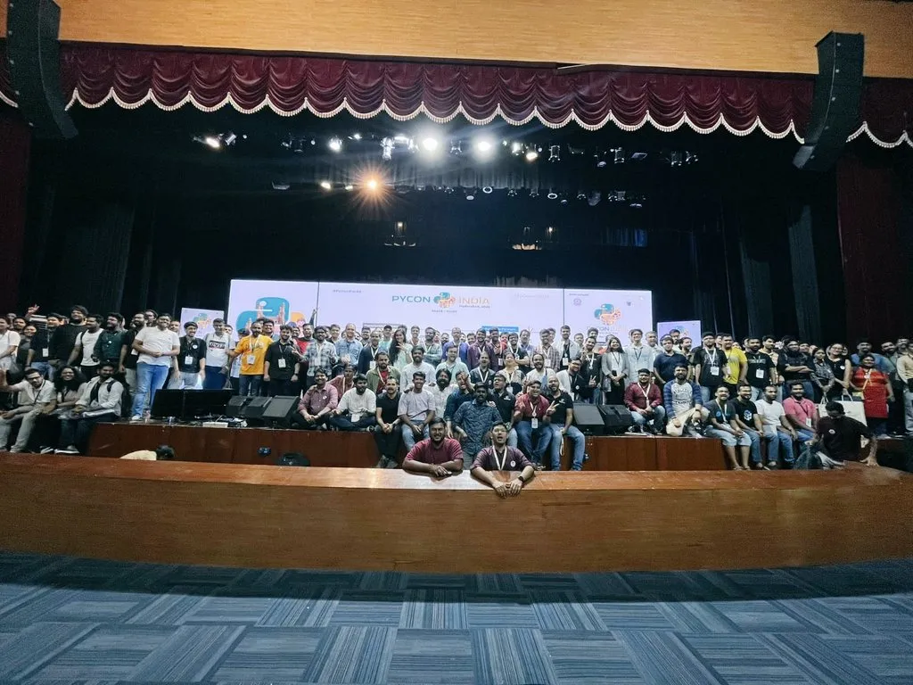

Pycon India 2023 Trip Report

This year’s python conference was held at a university from 29th September to 2nd October in Hyderabad with around 1000 attendees flocking to the scene across a span of four days. The conference’s theme was mainly focused towards Generative AI relate topics and the open-source network.
In this blog, I will distill the most important takeaways from the conference — latest developments, emerging fields and industries, and cool resources.
Key highlights
Keynotes, talks, and workshops
The keynote speakers for the conference were Jessica Greene, Marcelo Trylesinski, Rushabh Mehta, Cheuk Ting Ho, and Shailesh Kumar. The keynotes were mostly about getting involved with open-source projects, transitioning into tech, and web frameworks.
Open-source and getting into tech
Jessica Greene’s keynote highlighted her journey of getting into the tech industry and the pivotal role the open-source community played in keeping her motivated throughout her transition. In addition to this transition (from a very different educational background), she highlighted the extra challenges she faced solely because she was a woman — lack of representation, biased narratives, and a heightened feeling of the imposter syndrome.
Her talk was very inspiring and provided constructive ways to overcoming these challenges — joining a (preferably women-led) tech community. Jessica, personally, found her ground with the PyLadies Berlin community and recently joined the Python Software Foundation to help support the global community. If you are a woman in tech or aspiring to be one, I highly recommend these resources.
On a similar note, Cheuk Ting Ho’s talk focused on how one can get started with contributing to open-source libraries, the benefits, as well as overcoming some of the challenges one might face. She is also a part of the Python Software Foundation and advocates heavily for diversity among the board members to accurately represent the larger Python global community.
TL;DR: Benefits of open-source community, PyLadies for women getting into tech, contribution benefits, open-source security (digital signing), raising issues and solving bugs.
All about frameworks
Marcelo Trylesinski gave an insightful keynote about the FastAPI framework and its benefits when compared to other frameworks (Flask, Django).
FastAPI is the way to go if your focus is to get started quickly and handle high volume requests (has async support). FastAPI has amazing integration with popular libraries for DB access and support for handling authentication. If you are currently working with Flask based applications, it would be a good idea to shift to FastAPI for faster response times (ASGI server capabilities).
The other cool framework for you to check out is Frappe. It’s a low-code framework customized for developing business applications. It is an integrated framework which makes it very easy to connect with payment gateways, SMS providers, cloud services, and other popular third-party tools. Rushabh Mehta (founder and CEO of Frappe), in his keynote gave a comprehensive list of applications (ERP based) that could be made with Frappe. He has created ERPNext, a free and open-source cloud ERP software which works best for accounting, inventory management, supply chain management, retail, human resources, and more.
TL;DR: FastAPI is better for high volume — low latency, good integration choices; Frappe for low-code approach, tailored for ERP based use cases.
Python 🤝 Gen A.I
With Python’s versatility and large network of libraries, it is the perfect choice for ML/AI based applications. With generative AI taking the internet by storm, it was no surprise to come across multiple talks, workshops and networking sessions that addressed the topic.
One such workshop gave great insight on building robust Retrieval Augmented Generation (RAG) systems. The current market for inference on documents with the help of LLMs is growing rapidly with multiple companies making use of these applications. The basics for building a good RAG system is quality extraction of data from documents, fine-tuning the hyper parameters, and using the right embeddings model.
Some key questions for you to consider before building a RAG system include the type of task you want it to perform (summarization, document comparison, semantic search, recency filtering, masking PII information, etc.), what type of benchmarks you need it to pass, and how you are going to check for quality/accuracy of the response.
In most cases, we would have to make use of query routers, either to make two retrieval calls for document comparison, or routing the retrieval call between a SQL DB and a vector DB based on the nature of query and type of data to be retrieved (structured/unstructured). We can make use of frameworks such as LangChain or LLaMAIndex for developing quick PoCs. Check out this resource if you are unsure on which framework to use. If you want to know more about efficient scaling of these systems, check out this resource (Cross encoders, re-rankers, fast text search, improving reliability, etc).
The other major aspect which garnered considerable attention is that of cost and the future of generative AI. Various keynote speakers who work in the industry highlighted the pitfalls of currently available and mainstream LLMs — sub optimally trained, blackbox nature, security concerns. People seemed to have a broad opinion that LLMs with 100B+ parameters would rarely be useful in real-world applications since the tasks are relatively well-defined and discrete (Example: Most companies don’t want their LLMs to write poems about John Cena and also be able to analyze their financial statements). The future of generative AI seems to be moving towards smaller parameter LLMs with a keen focus on high quality data and compute optimization to enable on-device capabilities for maximum outreach.
TL;DR: Building and refining Retrieval Augmented Generation (RAG) systems; Future of gen AI — smaller parameter LLMs with focus on high-quality data and compute optimization.
Summary
Overall, the conference was an amazing experience which gave insights into various domains, what developers are working on, future of multiple technology related sectors, and the cool ways companies are solving pressing real-world problems.
To watch the recorded stream of keynotes click here.
To look at the talk proposals click here.